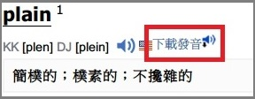

「Chrome Extension 下載網路字典發音」已經成功安裝/更新完畢

使用方法
使用方法請參照：
使用說明
更新紀錄
v 0.1.8 (2016/6/5)
新增 沪江小d
新增 tratu.coviet.vn
v 0.1.7 (2016/6/1)
新增 Vietnamesepod101
v 0.1.6 (2016/5/17)
新增 Macmillan Dictionary
v 0.1.5 (2016/5/4)
修正此頁面編碼問題
v 0.1.4 (2016/4/24)
新增 Quizlet
v 0.1.3 (2016/4/22)
新增 The Free Dictionary
v 0.1.2 (2016/4/22)
修正 japanesepod101 改版
v 0.1.1 (2016/4/17)
新增 Vocabulary.com
修正「下載發音」之字體大小
新增
User Data Privacy
v 0.1.0 (2016/3/12)
新增 Merriam Webster
新增 VoiceTube
新增 Dr.eye 譯典通
v 0.0.9 (2015/12/13)
新增 learnersdictionary
v 0.0.8 (2015/12/2)
新增法語助手
v 0.0.7 (2015/11/11)
新增 japanesepod101
v 0.0.6 (2015/11/10)
新增德語助手
v 0.0.5 (2015/11/2)
新增劍橋字典
v 0.0.4 (2015/10/30)
修正萌典客語錯誤
v 0.0.3 (2015/10/29)
新增萌典
支援的網站
User Data Privacy